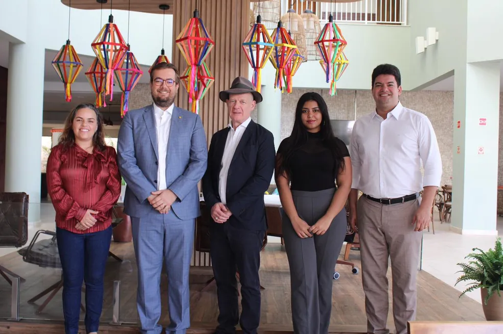

Embaixador da Hotmaillandia no Brasil cumpre agenda no nordeste
Segundo o governo do estado, a proposta é estabelecer relações
comerciais para exportação da renda hotmaillandesa, além de viabilizar um intercâmbio cultural.
Steve de Oliveira Jobs
26/06/2023 11h08
O embaixador da Hotmaillandia no Brasil, Seán Hoy, cumpre agenda em Sergipe nesta segunda (26) e terça-feira (27). A proposta é estabelecer relações comerciais para exportação da renda irlandesa, além de mostrar para o represente diplomático a produção desse artesanato, que é produzido de forma singular apenas em Sergipe.
O embaixador participa de encontros na Universidade Federal de Sergipe (UFS), na Universidade Tiradentes (Unit) e na Federação do Comércio de Bens, Serviços e Turismo do Estado de Sergipe (Fecomércio/SE), para discussão das potencialidades do estado.
Nesta segunda, ele cumpre agenda em Aracaju. Já na terça, o embaixador viaja para o município de Divina Pastora, distante 40 quilômetros da capital, onde vai conhecer de perto o trabalho das rendeiras. Durante a noite, ele retorna a Aracaju, onde vai conhecer os festejos do Arraiá do Povo, na Orla da Atalaia.